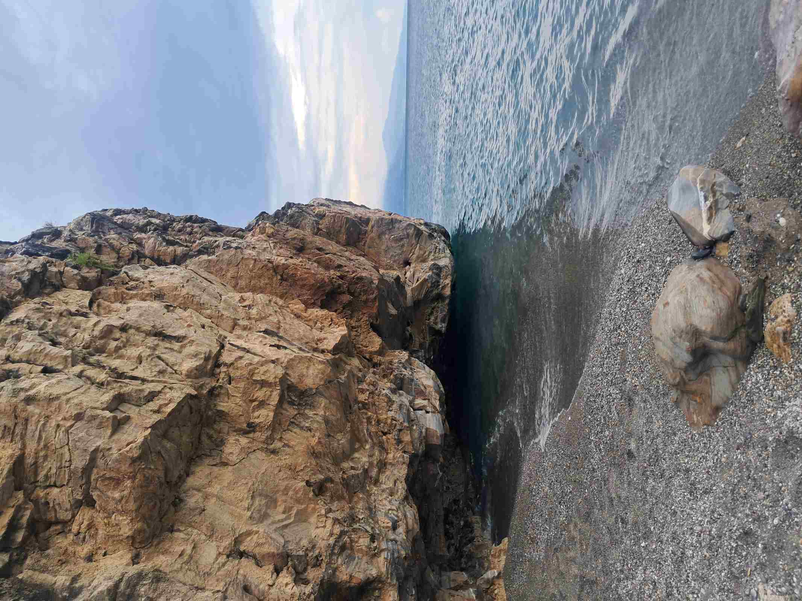

2026
A Coxeter-type bound for zero-fiber rings of quaternionic quotient singularities.
CIME Coxeter School, Cetraro, Italy.
Slides PDF

2026
A Coxeter-type bound for zero-fiber rings of quaternionic quotient singularities.
CIME Coxeter School, Cetraro, Italy.
Slides PDF
2026
Anillo de la fibra cero para grupos de reflexiones en rango 2.
Seminario No Degenerado, Instituto de Matemáticas, Universidad de Talca.
Slides PDF
2026
What zero remember?
Next Gen Session, 13th Heidelberg Laureate Forum.
Video at 24:10
2025
El anillo de la fibra cero para grupos de reflexiones cuaterniónicos.
Poster, EMALCA — eLENA X 2025, Universidad Nacional de Córdoba, Argentina.
Poster PDF
2026
Zero fiber rings for rank 2 quaternionic reflection groups.
XXV Latin American Congress of Algebra, Lima, Peru.
2026
On bounds for the degree of the zero fiber of rank-2 quaternionic reflection groups.
XXXVIII Jornada de Matemática de la Zona Sur, Universidad del Bío-Bío, Concepción, Chile.
2025
About the diagonal coinvariant ring for quaternionic reflection groups.
XXXVII Jornada de Matemática de la Zona Sur, Universidad Católica del Maule, Talca, Chile.
2024
Zero fiber of quotient singularities.
XXIV Coloquio Latinoamericano de Álgebra, Santiago de Chile, Chile.